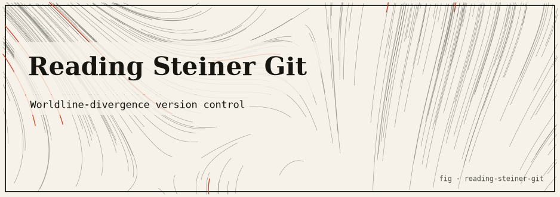

reading-steiner-git
A Steins;Gate worldline VCS toy that snapshots a sandbox and reports a six-decimal Divergence Meter reading for each checkpoint — your commits as worldline transitions.

The idea
In Steins;Gate, Okabe Rintaro is the only person who can remember timelines across worldline transitions — this is his “Reading Steiner” ability. Each new worldline is labelled by a Divergence Meter reading: a six-decimal number in [0, 2) that identifies the timeline cluster.
This package treats version control as worldline transitions: each snapshot (commit) of a sandbox directory is a new worldline, and the snapshot hash is fed through the divergence meter algorithm to produce a six-decimal reading. Rewriting history is branching; restoring an old snapshot is “Okabe jumps back.”
How it works
- Snapshots a sandbox directory by hashing all file contents with SHA-256.
- The combined hash is fed through the divergence meter algorithm (same as the
divergence-meter package):
Fraction(word, 2^63)gives a value in [0, 2). - Checkpoints are stored as an atomic-write JSON ledger (no partial writes).
- The CLI prints the divergence reading for the current sandbox state and the divergence delta from the previous checkpoint.
Run it
git clone https://github.com/caelum0x/awesome-mad-projects.git cd reading-steiner-git npm install npm run build # Snapshot your sandbox node dist/index.js snapshot ./my-sandbox # Output: # Worldline 0001: 0.847312 [Alpha attractor] # (make changes to ./my-sandbox) # Worldline 0002: 1.193847 [Beta attractor] # Divergence delta: +0.346535